<link href="https://fonts.googleapis.com/css?family=Open+Sans" rel="stylesheet">
<style>
  body { font-family: 'Open Sans', sans-serif; }
  .videoWrapper {
	position: relative;
	padding-bottom: 56.25%; /* 16:9 */
	padding-top: 25px;
	height: 0;
}
.videoWrapper iframe {
	position: absolute;
	top: 0;
	left: 0;
	width: 100%;
	height: 100%;
}
</style>

<main>
  <div class="pl-2 pr-2 column pt-6">
    <h1 class="h2">Computational Photography</h1>
    <h2 class="h3"></h2>

    <h2 class="h3">Final Project: Tiny Planets</h2>
    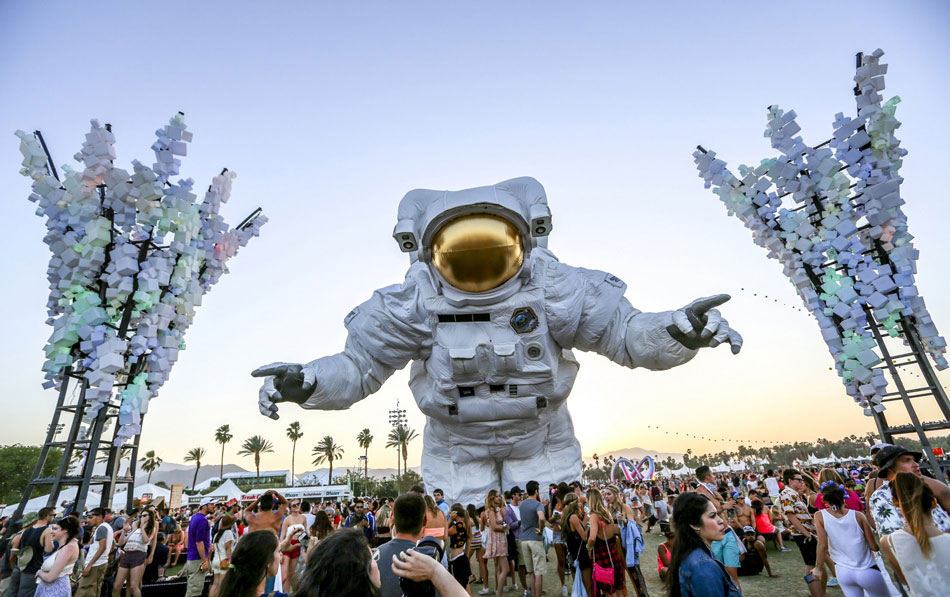
    <div class="pb-6 gap"></div>
    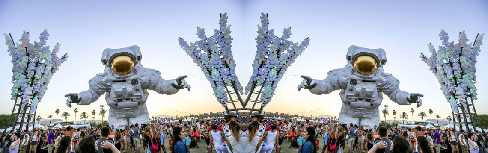
    <div class="pb-6 gap"></div>
    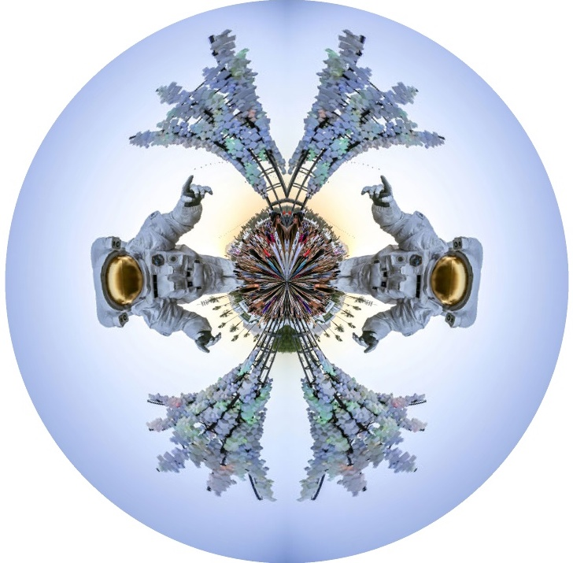
    <div class="pb-6 gap"></div>

    <p>
      For a final project, I decided to implement a Tiny Planet computational phtography pipeline.  This pipeline involves a few pre-processing steps
      to optionally mirror, flip, and/or square the input image.  An output image is prepared and inverse warping is used to compute what pixels to
      pull from the input image.  Conceptually, this technique is based on stereographic projection and is heavily dependent on trigonometry.  Ideally,
      I'd like to implement this pipeline in an iPhone app so I can take advantage of the onboard cameras and built in software.
    </p>

    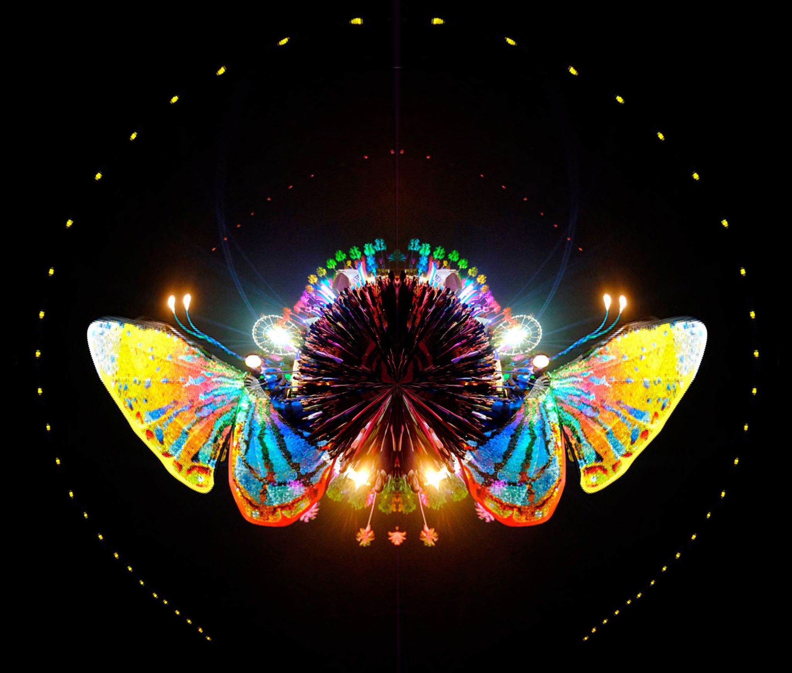
    <div class="pb-6 gap"></div>
    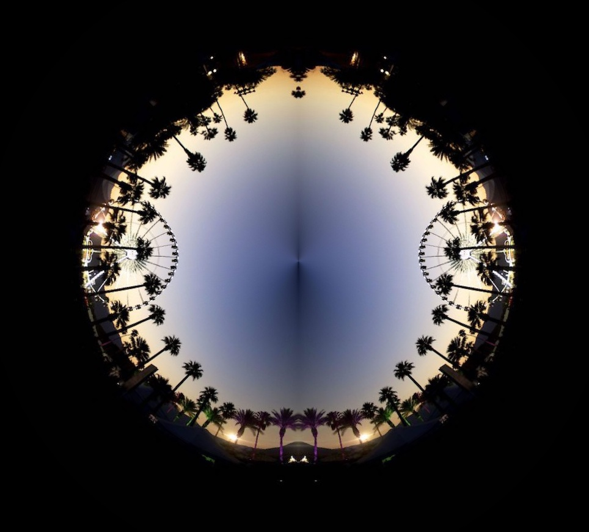
    <div class="pb-6 gap"></div>
    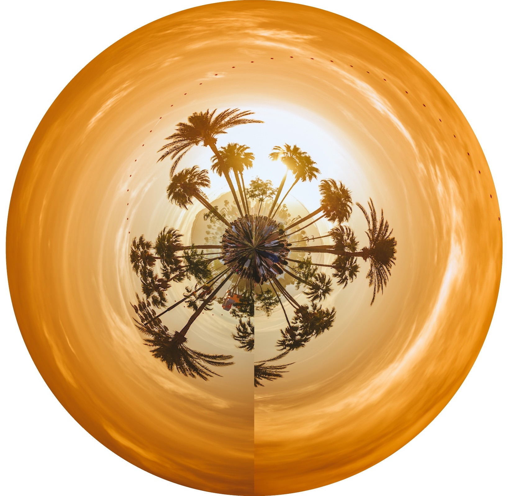


    <h2 class="h3">Epsilon Photography</h2>
    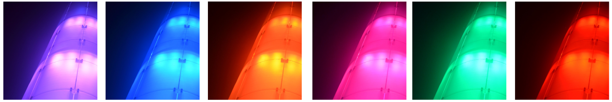
    <div class="pb-6 gap"></div>
    <a href="/images/gt/lights_01.gif"></a>

    <h2 class="h3">Camera Obscura</h2>
    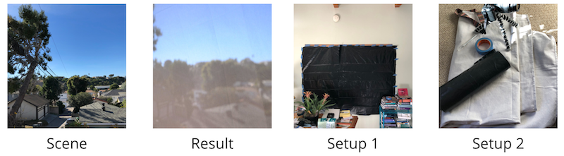
    <div class="pb-6 gap"></div>
    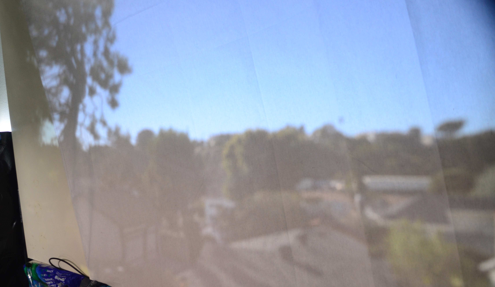

    <h2 class="h3">Blending</h2>
    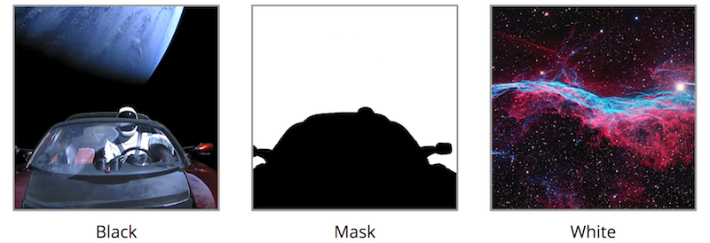
    <div class="pb-6 gap"></div>
    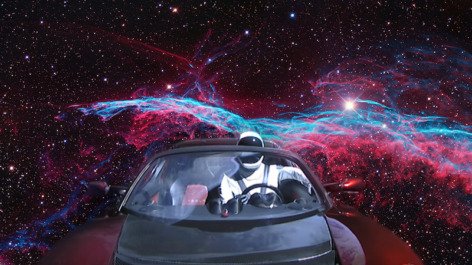
    <div class="pb-6 gap"></div>
    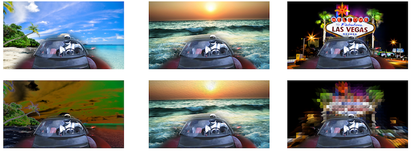


    <h2 class="h3">Panoramas</h2>
    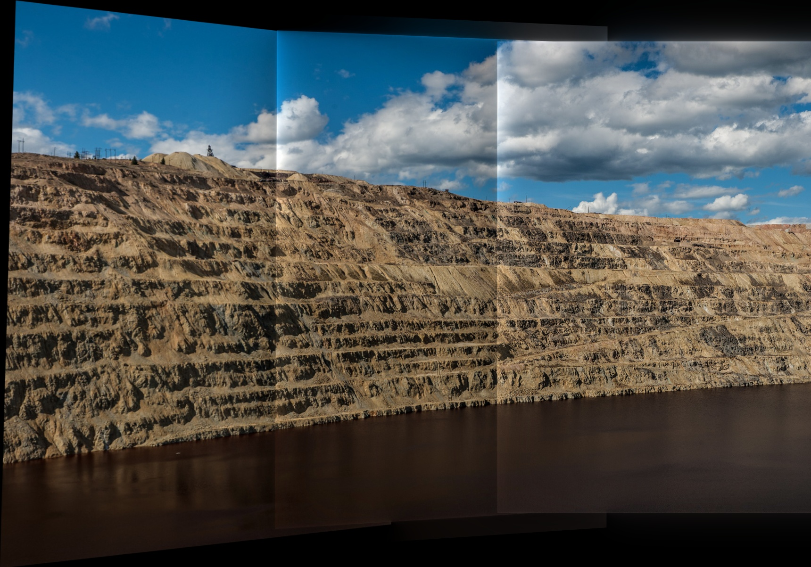
    <div class="pb-6 gap"></div>
    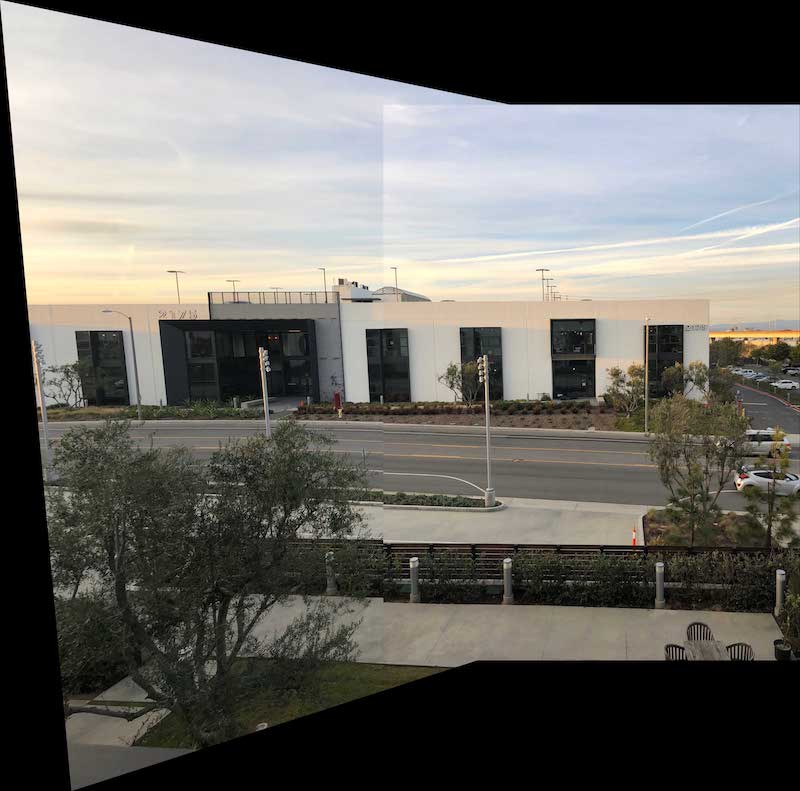
    <div class="pb-6 gap"></div>
    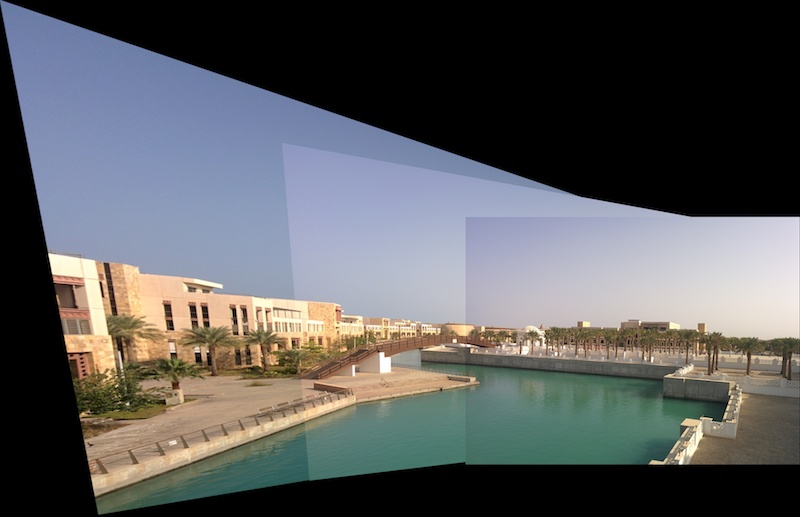

    <h2 class="h3">HDR</h2>
    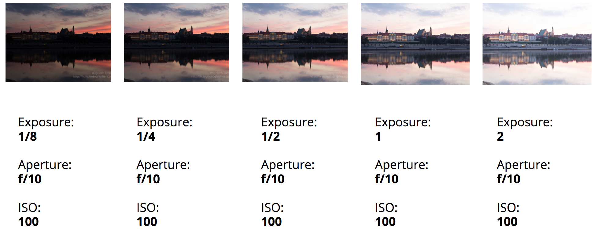
    <div class="pb-6 gap"></div>
    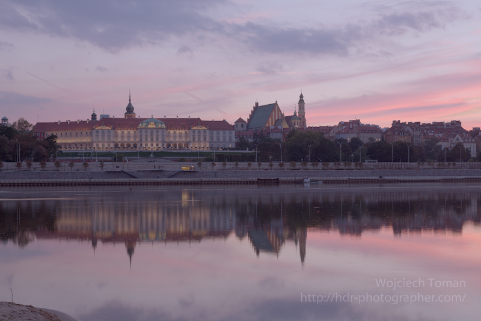

    <h2 class="h3">Video Textures</h2>
    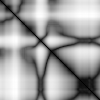


    <h2 class="h3">Midterm Project: Seam Carving</h2>
    <div class="videoWrapper">
    <iframe width="640" height="360" src="https://www.youtube.com/embed/dSys95N-5Gw?showinfo=0" frameborder="0" allowfullscreen></iframe>
    </div>
    <div class="pb-6 gap"></div>
    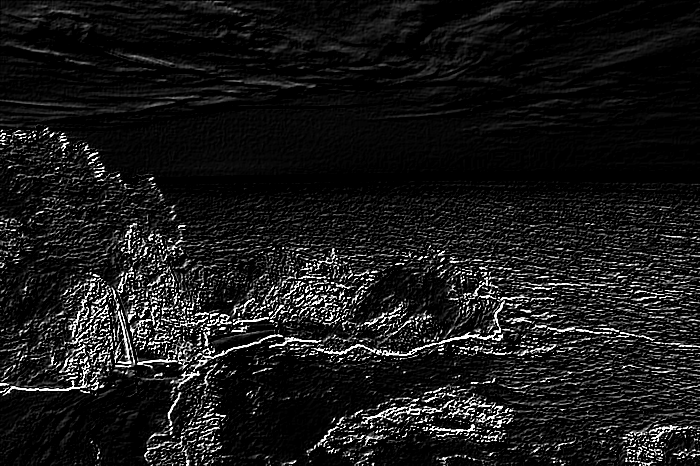
    <div class="pb-6 gap"></div>
    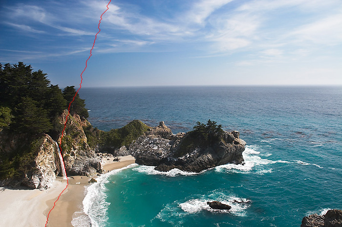


    <h2 class="h3">Drone Photography</h2>
    <div class="videoWrapper">
    <iframe width="640" height="360" src="https://www.youtube.com/embed/j2k139y-Ovc?showinfo=0" frameborder="0" allowfullscreen></iframe>
    </div>
    <div class="pb-6 gap"></div>
    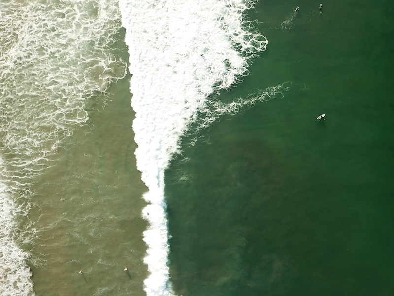


    <div class="pb-6 gap"></div>
  </div>
</main>
